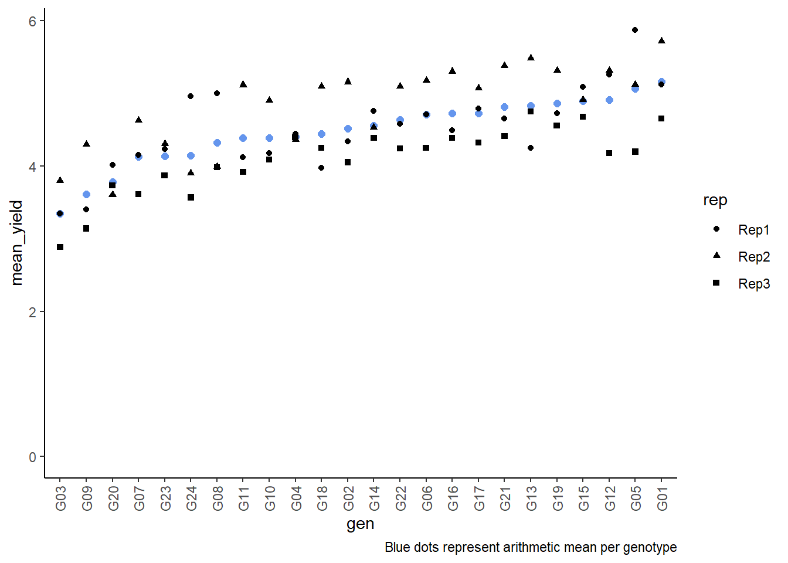
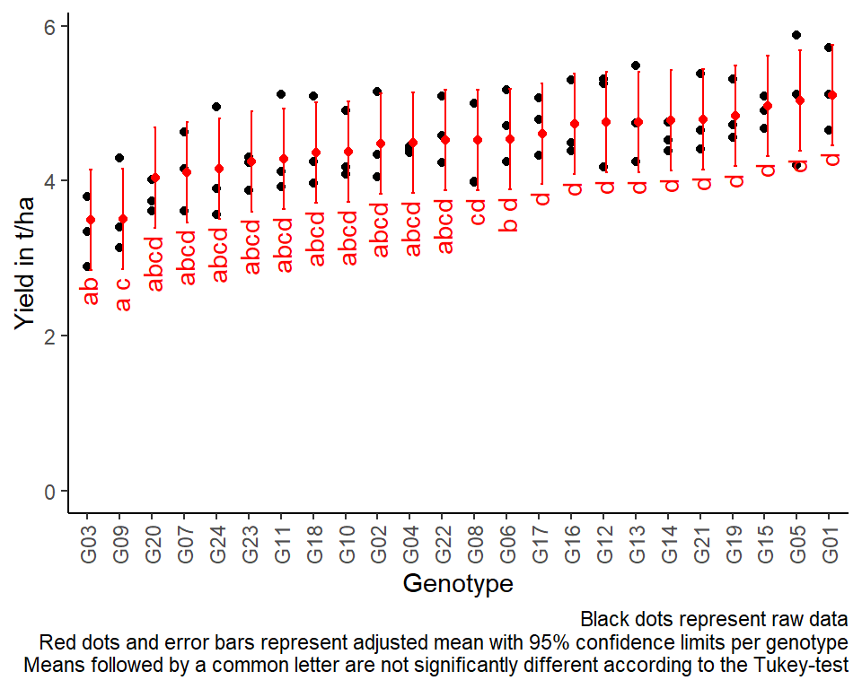

Alpha design
# packages
pacman::p_load(tidyverse, # data import and handling
conflicted, # handling function conflicts
lme4, lmerTest, # linear mixed model
emmeans, multcomp, multcompView, # adjusted mean comparisons
ggplot2, desplot) # plots
# conflicts: identical function names from different packages
conflict_prefer("select", "dplyr")
conflict_prefer("filter", "dplyr")
conflict_prefer("lmer", "lmerTest")Data
This example is taken from Chapter “3.8 Analysis of an \(\alpha\)-design” of the course
material “Mixed models for metric data (3402-451)” by Prof. Dr. Hans-Peter Piepho. It considers data
published in John and Williams (1995) from a yield (t/ha) trial
laid out as an alpha design. The trial had 24 genotypes
(gen), 3 complete replicates (rep) and 6
incomplete blocks (inc.block) within each replicate. The
block size was 4.
Import
# data (import via URL)
dataURL <- "https://raw.githubusercontent.com/SchmidtPaul/DSFAIR/master/data/John%26Williams1995.csv"
dat <- read_csv(dataURL)
dat## # A tibble: 72 x 7
## plot rep inc.block gen yield row col
## <dbl> <chr> <chr> <chr> <dbl> <dbl> <dbl>
## 1 1 Rep1 B1 G11 4.12 4 1
## 2 2 Rep1 B1 G04 4.45 3 1
## 3 3 Rep1 B1 G05 5.88 2 1
## 4 4 Rep1 B1 G22 4.58 1 1
## 5 5 Rep1 B2 G21 4.65 4 2
## 6 6 Rep1 B2 G10 4.17 3 2
## 7 7 Rep1 B2 G20 4.01 2 2
## 8 8 Rep1 B2 G02 4.34 1 2
## 9 9 Rep1 B3 G23 4.23 4 3
## 10 10 Rep1 B3 G14 4.76 3 3
## # ... with 62 more rowsFormatting
Before anything, the columns plot, rep,
inc.block and gen should be encoded as
factors, since R by default encoded them as character.
dat <- dat %>%
mutate_at(vars(plot:gen), as.factor)Exploring
In order to obtain a field layout of the trial, we can use the
desplot() function. Notice that for this we need two data
columns that identify the row and column of
each plot in the trial.
desplot(data = dat, flip = TRUE,
form = gen ~ col + row | rep, # fill color per genotype, headers per replicate
text = gen, cex = 0.7, shorten = "no", # show genotype names per plot
out1 = rep, # lines between complete blocks/replicates
out2 = inc.block, # lines between incomplete blocks
main = "Field layout", show.key = F) # formatting
An \(\alpha\)-design is a design with incomplete blocks, where the blocks can be grouped into complete replicates. Such designs are termed “resolvable”. The model must have an effect for complete replicates, and effects for incomplete blocks must be nested within replicates.
We could also have a look at the arithmetic means and standard
deviations for yield per genotype (gen) or incomplete block
(inc.block). Notice that the way the factor variable
inc.block is defined, it only has 6 levels (B1, B2, B3, B4,
B5, B6). However, as can be clearly seen on the field layout above,
there are 18 incomplete blocks, i.e. 6 per replicate. Thus, an
actual incomplete block here is identified by the information stored in
rep and inc.block. Alternatively, one
could have coded the inc.block variable as a factor with 18
levels (B1-B18), but this was not done here.
dat %>%
group_by(gen) %>%
summarize(mean = mean(yield),
std.dev = sd(yield)) %>%
arrange(desc(mean)) %>% # sort
print(n=Inf) # print full table## # A tibble: 24 x 3
## gen mean std.dev
## <fct> <dbl> <dbl>
## 1 G01 5.16 0.534
## 2 G05 5.06 0.841
## 3 G12 4.91 0.641
## 4 G15 4.89 0.207
## 5 G19 4.87 0.398
## 6 G13 4.83 0.619
## 7 G21 4.82 0.503
## 8 G17 4.73 0.379
## 9 G16 4.73 0.502
## 10 G06 4.71 0.464
## 11 G22 4.64 0.432
## 12 G14 4.56 0.186
## 13 G02 4.51 0.574
## 14 G18 4.44 0.587
## 15 G04 4.40 0.0433
## 16 G10 4.39 0.450
## 17 G11 4.38 0.641
## 18 G08 4.32 0.584
## 19 G24 4.14 0.726
## 20 G23 4.14 0.232
## 21 G07 4.13 0.510
## 22 G20 3.78 0.209
## 23 G09 3.61 0.606
## 24 G03 3.34 0.456dat %>%
group_by(rep, inc.block) %>%
summarize(mean = mean(yield),
std.dev = sd(yield)) %>%
arrange(desc(mean)) %>% # sort
print(n=Inf) # print full table## # A tibble: 18 x 4
## # Groups: rep [3]
## rep inc.block mean std.dev
## <fct> <fct> <dbl> <dbl>
## 1 Rep2 B3 5.22 0.149
## 2 Rep2 B5 5.21 0.185
## 3 Rep2 B6 5.11 0.323
## 4 Rep2 B4 5.01 0.587
## 5 Rep1 B5 4.79 0.450
## 6 Rep1 B1 4.75 0.772
## 7 Rep1 B6 4.58 0.819
## 8 Rep3 B1 4.38 0.324
## 9 Rep1 B3 4.36 0.337
## 10 Rep1 B4 4.33 0.727
## 11 Rep3 B3 4.30 0.0710
## 12 Rep1 B2 4.29 0.273
## 13 Rep2 B2 4.23 0.504
## 14 Rep3 B4 4.22 0.375
## 15 Rep3 B5 4.15 0.398
## 16 Rep2 B1 4.12 0.411
## 17 Rep3 B2 3.96 0.631
## 18 Rep3 B6 3.61 0.542We can also create a plot to get a better feeling for the data.
plotdata <- dat %>%
group_by(gen) %>%
mutate(mean_yield = mean(yield)) %>% # add column with mean yield per gen
ungroup() %>%
mutate(gen = fct_reorder(.f = gen, .x = mean_yield)) # sort factor variable by mean yield
ggplot(data = plotdata,
aes(x = gen)) +
geom_point(aes(y = mean_yield), color = "cornflowerblue", size = 2) + # scatter plot mean
geom_point(aes(y = yield, shape = rep)) + # scatter plot observed
ylim(0, NA) + # force y-axis to start at 0
labs(caption = "Blue dots represent arithmetic mean per genotype") +
theme_classic() + # clearer plot format
theme(axis.text.x = element_text(angle=90, vjust=0.5)) # rotate x-axis labels
Modelling
Finally, we can decide to fit a linear model with yield
as the response variable and (fixed) gen and
block effects. There also needs to be term for the 18
incomplete blocks (i.e. rep:inc.block) in the
model, but it can be taken either as a fixed or a random effect. Since
our goal is to compare genotypes, we will determine which of the two
models we prefer by comparing the average standard error of a difference
(s.e.d.) for the comparisons between adjusted genotype means - the lower
the s.e.d. the better.
# blocks as fixed (linear model)
mod.fb <- lm(yield ~ gen + rep +
rep:inc.block,
data = dat)
mod.fb %>%
emmeans(specs = "gen") %>% # get adjusted means
contrast(method = "pairwise") %>% # get differences between adjusted means
as_tibble() %>% # format to table
summarise(mean(SE)) # mean of SE (=Standard Error) column## # A tibble: 1 x 1
## `mean(SE)`
## <dbl>
## 1 0.277# blocks as random (linear mixed model)
mod.rb <- lmer(yield ~ gen + rep +
(1 | rep:inc.block),
data = dat)
mod.rb %>%
emmeans(specs = "gen",
lmer.df = "kenward-roger") %>% # get adjusted means
contrast(method = "pairwise") %>% # get differences between adjusted means
as_tibble() %>% # format to table
summarise(mean(SE)) # mean of SE (=Standard Error) column## # A tibble: 1 x 1
## `mean(SE)`
## <dbl>
## 1 0.270As a result, we find that the model with random block effects has the smaller s.e.d. and is therefore more precise in terms of comparing genotypes.
Variance component estimates
We can extract the variance component estimates for our mixed model as follows:
mod.rb %>%
VarCorr() %>%
as.data.frame() %>%
select(grp, vcov)## grp vcov
## 1 rep:inc.block 0.06194388
## 2 Residual 0.08522511ANOVA
Thus, we can conduct an ANOVA for this model. As can be seen, the
F-test of the ANOVA (using Kenward-Roger’s method for denominator
degrees-of-freedom and F-statistic) finds the gen effects
to be statistically significant (p<0.001).
mod.rb %>% anova(ddf="Kenward-Roger")## Type III Analysis of Variance Table with Kenward-Roger's method
## Sum Sq Mean Sq NumDF DenDF F value Pr(>F)
## gen 10.5070 0.45683 23 35.498 5.3628 4.496e-06 ***
## rep 1.5703 0.78513 2 11.519 9.2124 0.004078 **
## ---
## Signif. codes: 0 '***' 0.001 '**' 0.01 '*' 0.05 '.' 0.1 ' ' 1Mean comparisons
mean_comparisons <- mod.rb %>%
emmeans(specs = "gen",
lmer.df = "kenward-roger") %>% # get adjusted means for cultivars
cld(adjust="tukey", Letters=letters) # add compact letter display
mean_comparisons## gen emmean SE df lower.CL upper.CL .group
## G03 3.50 0.199 44.3 2.85 4.15 ab
## G09 3.50 0.199 44.3 2.85 4.15 a c
## G20 4.04 0.199 44.3 3.39 4.69 abcd
## G07 4.11 0.199 44.3 3.46 4.76 abcd
## G24 4.15 0.199 44.3 3.50 4.80 abcd
## G23 4.25 0.199 44.3 3.60 4.90 abcd
## G11 4.28 0.199 44.3 3.63 4.93 abcd
## G18 4.36 0.199 44.3 3.71 5.01 abcd
## G10 4.37 0.199 44.3 3.72 5.02 abcd
## G02 4.48 0.199 44.3 3.83 5.13 abcd
## G04 4.49 0.199 44.3 3.84 5.14 abcd
## G22 4.53 0.199 44.3 3.88 5.18 abcd
## G08 4.53 0.199 44.3 3.88 5.18 cd
## G06 4.54 0.199 44.3 3.89 5.19 b d
## G17 4.60 0.199 44.3 3.95 5.25 d
## G16 4.73 0.199 44.3 4.08 5.38 d
## G12 4.76 0.199 44.3 4.11 5.40 d
## G13 4.76 0.199 44.3 4.11 5.41 d
## G14 4.78 0.199 44.3 4.13 5.42 d
## G21 4.80 0.199 44.3 4.15 5.44 d
## G19 4.84 0.199 44.3 4.19 5.49 d
## G15 4.97 0.199 44.3 4.32 5.62 d
## G05 5.04 0.199 44.3 4.39 5.69 d
## G01 5.11 0.199 44.3 4.46 5.76 d
##
## Results are averaged over the levels of: rep
## Degrees-of-freedom method: kenward-roger
## Confidence level used: 0.95
## Conf-level adjustment: sidak method for 24 estimates
## P value adjustment: tukey method for comparing a family of 24 estimates
## significance level used: alpha = 0.05
## NOTE: Compact letter displays can be misleading
## because they show NON-findings rather than findings.
## Consider using 'pairs()', 'pwpp()', or 'pwpm()' instead.Note that if you would like to see the underyling individual
contrasts/differences between adjusted means, simply add
details = TRUE to the cld() statement. Also,
find more information on mean comparisons and the Compact Letter Display
in the separate Compact Letter
Display Chapter
Present results
Mean comparisons
For this example we can create a plot that displays both the raw data and the results, i.e. the comparisons of the adjusted means that are based on the linear model. If you would rather have e.g. a bar plot to show these results, check out the separate Compact Letter Display Chapter
# resort gen factor according to adjusted mean
mean_comparisons <- mean_comparisons %>%
mutate(gen = fct_reorder(gen, emmean))
plotdata2 <- dat %>%
mutate(gen = fct_relevel(gen, levels(mean_comparisons$gen)))
ggplot() +
# black dots representing the raw data
geom_point(
data = plotdata2,
aes(y = yield, x = gen)
) +
# red dots representing the adjusted means
geom_point(
data = mean_comparisons,
aes(y = emmean, x = gen),
color = "red",
position = position_nudge(x = 0.1)
) +
# red error bars representing the confidence limits of the adjusted means
geom_errorbar(
data = mean_comparisons,
aes(ymin = lower.CL, ymax = upper.CL, x = gen),
color = "red",
width = 0.1,
position = position_nudge(x = 0.1)
) +
# red letters
geom_text(
data = mean_comparisons,
aes(y = lower.CL, x = gen, label = str_trim(.group)),
color = "red",
angle = 90,
hjust = 1,
position = position_nudge(y = - 0.1)
) +
ylim(0, NA) + # force y-axis to start at 0
ylab("Yield in t/ha") + # label y-axis
xlab("Genotype") + # label x-axis
labs(caption = "Black dots represent raw data
Red dots and error bars represent adjusted mean with 95% confidence limits per genotype
Means followed by a common letter are not significantly different according to the Tukey-test") +
theme_classic() + # clearer plot format
theme(axis.text.x = element_text(angle=90, vjust=0.5)) # rotate x-axis
R-Code and exercise solutions
Please click here to find a folder with .R
files. Each file contains
- the entire R-code of each example combined, including
- solutions to the respective exercise(s).
Please feel free to contact me about any of this!
schmidtpaul1989@outlook.com